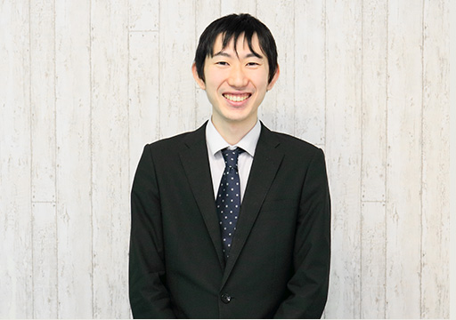

主にAWSやAzureなどの、パブリッククラウドを活用したシステムの設計構築や運用自動化の開発を担当しております。
設計構築では、お客様のご要望からどのようにシステムを構成するか検討、ドキュメント化し、実際にその通りに構築していきます。
運用自動化においては、クラウドの既存サービスだけでは実装できない仕組みを、Pythonやシェルスクリプトでコーディングすることにより実現していきます。
本来であれば簡単に実現できる仕組みが、お客様側のセキュリティ要件などで実現できなくなる場合も多々ありますが、代わりの仕組みを考えて提案していくこともこの仕事の面白さの一つだと思っています。
People of SkyWill 01Masato.S
お客様のご要望を実現するシステムを考えるThis is my job

メンバーとの信頼関係を構築できたThe happiest episode
私はマネージャとして、自身の経験を伝え、メンバーを導いていく役割を持っています。それは同じ現場のメンバーだけではなく、別の現場で働いているメンバーに対しても同様で、定期的に今後のキャリア計画についてお話をする機会を設けています。
そういった取り組みの中で、複数のメンバーから「○○さん(私)を目指したい」「超えていきたい」と仰って頂けることがあり、上に立つ者として目標とされることは大変嬉しく思っています。ですが、簡単に抜かれたり、追い付かれたりする気は無いので、私自身も高めていかなければと、良い刺激を受けています。
また、それ以上に、メンバーと信頼関係を築けて、切磋琢磨できる関係性になれたことが、一番うれしいですね。
チャンスに溢れているReason why I chose this company
スカイウイルに所属する以上、自分のキャリアイメージややりたいことは明確にした方が良いと思っています。なぜなら、上司や周囲にやりたいと思っていることを伝えると、それをどうすれば実現できるかのアドバイスを頂けたり、実際にやれる機会を与えてくださることが多いためです。
実際、私も元々はインフラのお仕事をしていましたが、心の奥底には開発がやりたい気持ちが眠っていました。それに気づいて、上司に口添えをしてくださったのは当時一緒に仕事をしていた先輩でしたし、それを知った上司も改めてヒアリングをしてくれて、開発の現場への異動を決めてくれました。そういった文化が根付いているスカイウイルが好きです。
もちろん、それに応えるだけの努力はしてきたつもりですが、私が今このポジションにいるのは自分の努力だけではなく、周囲の皆様がチャンスを与えてくださったおかげです。今ではチャンスを与える立場になり、その大変さが身に染みていますが、同じぐらいやりがいも感じています。
これまでのキャリア
『インフラから開発、そしてデータサイエンス。経験を伝える立場へ』
今では開発部門のマネージャですが、元々はインフラの構築や保守を担当していました。お客様の要望に応じてカスタマイズしたサーバ環境をご提供する業務で、主要なLinux, Unix系OSや仮想化技術、大型ストレージの知見を習得しました。
その後、IoT開発の現場へ異動し、ロボットと対話できる音声対話システムを開発しました。展示会にも出展され、ネットニュースにも取り上げられたことをよく覚えています。
開発の経験をある程度積んだのち、AIシステムの設計開発に携わる機会を頂きました。既存のシステムと連携してAIの機能を提供するもので、お客様から要件をヒアリングしたり、実際にどのような技術を用いて実現するかというアーキテクト設計も担当させて頂き、エンジニアとして大きく成長することが出来ました。
こうしてインフラ、開発、AIの3分野に携わった経験を活かして、新卒研修の講師も担当しました。ただ教科書通りに教えるだけではなく、現場で培ったノウハウを凝縮して皆様にお伝えすることで、現場にいる先輩たちの元で一人前に活躍できるエンジニアに育ってくれたと感じています。
スカイウイルで実現したいこと
『エンジニア育成塾を立ち上げる』
私がリードするプロジェクトに新卒の皆さんや若手の方々を迎え入れて、一緒に仕事をする中で成長させていきたいと思っています。その方が集合研修よりも達成感があって楽しいしね(笑)。
社内的に私の城(プロジェクト体制)を築いて、「あの現場に行って1年もすれば、1人前になって帰ってこれるよ」とか、思って貰えるような状態が理想です。
私が育てたエンジニアが別のプロジェクトへ羽ばたいていって、そこで一人前に活躍し、また他の若手を育ててくれたら嬉しいですね。そんな良い循環を作っていけたらと思っています。
1日のスケジュール1 day schedule
-

起床
朝はスロースタート
朝は非常に弱いので、起床は遅めです。ゆっくりとストレッチしながら、だんだんと目を覚ましていきます。 -

通勤
通勤は貴重な情報収集の時間
電車に乗っている時間は30分程度です。この間に、いくつかのWebサイトやSNSなどから、技術的にホットな、新しい情報を収集します。
また、1日のスケジュールを確認し、その日にやるべき作業内容を整理しておきます。 -

出社
まずはメンバーの様子をチェック
出社予定のメンバーがきちんと出社しているか、テレワークのメンバーが作業開始しているかなど、ひと通り確認します。
また、その日の作業内容や、困っていることがないかヒアリングし、解決が必要な事案があれば、その日のうちに解決できるようにスケジュールを調整しておきます。 -

打合せ
少し先の未来も見据えた育成
上司へ自身とメンバーの作業状況を共有します。今の状態で本当に改善点はないか、今依頼している作業内容で本当にメンバーを成長させていけるかなど、短中期的な今後の方針を検討します。 -

設計・開発・メンバーフォロー
本格的に作業開始
自分が担当しているシステムの設計や、設計書をもとに実装したりします。何もなければ自分の作業を進めますが、大抵の場合はメンバーから質問されたり、メンバーのアウトプットをレビューしたりしています。
-

昼食
お昼は絶好の学習の場
大抵は、お弁当を食べながら、技術の情報収集を行います。新しい技術だけではなく、既存技術の深堀をしたり、その時々で興味のあることを学習します。
また、他の社員と一緒にランチに行き、技術的な話で盛り上がることもあります。 -

設計・開発
割り込み禁止の集中作業
午前中の作業の続きを行います。自分の作業が出来る時間は限られているため、短い時間で最大限のアウトプットを出すために、この時間だけは割り込み禁止で集中します。 -

営業支援
エンジニア視点で経営を支える
現在就業している現場から離れて、別の現場へ異動する際、お客様と面談を実施します。その面談でエンジニアのスキルをアピールする必要がありますので、その練習を行います。
オンライン会議ツールで通話しながら、メンバーの経歴を説明して貰ったり、質疑応答をすることで、その人の良さが相手に伝わるように、指導していきます。 -

戦略会議
世界中のデータサイエンティストと競い合うコンペに参加
社内の優秀なデータサイエンティストたちと、コンペティションに関する打合せを行います。技術的に非常にレベルの高い会話がされるため、一瞬も気が抜けません。 -

退社
退勤中も情報収集
SNSで、日中帯に発信された技術情報などをキャッチアップしつつ、気づいたら猫動画を眺めています。不思議なこともあるものですね。
OFF DAY
エンジニアは日々勉強
その日にキャッチアップした技術や、日頃から興味のあった技術について、自分なりに触って試してみる時間を作っています。モバイルアプリやWebアプリを開発してみたり、開発したアプリを流行りのクラウドサービスで動作させてみたり、データサイエンスのコンペに挑戦したりしています。
こうして身に付けたスキルを武器として、新しいプロジェクトに参画したり、メンバーへの技術指導に活かしています。